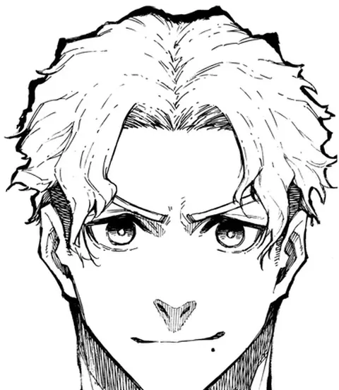

Treinadores & Staff
Chris Prince
Chris Prince: Master Striker da Neo Egoist League. Estreia no mangá: capítulo 155.
- Ocupação
- Jogador de futebol, Master Striker (NEL)
- Posição
- Atacante
- Arma
- Físico perfeito, Chute sem rotação (knuckleball), Flow
- Afiliação
- Inglaterra
- Números de camisa
- 7
- Idade
- 27 anos
- Estreia no mangá
- Capítulo 155
Trajetória: fase → time → nº
- Neo Egoist League → Manshine City
Fonte: Blue Lock Wiki – Chris Prince (dados do quadro de informações; campos ausentes na wiki foram omitidos)